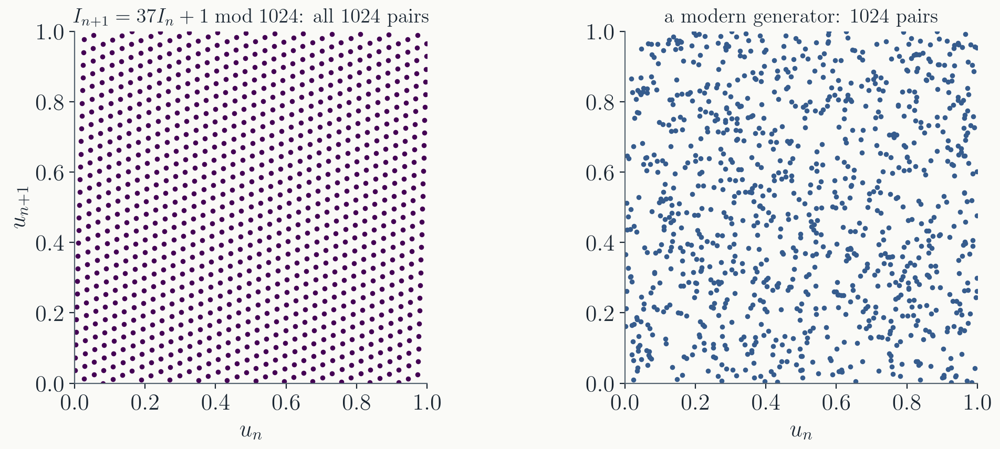
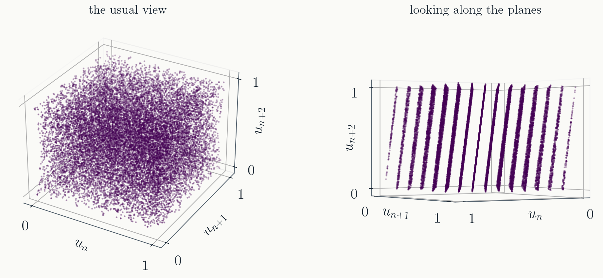
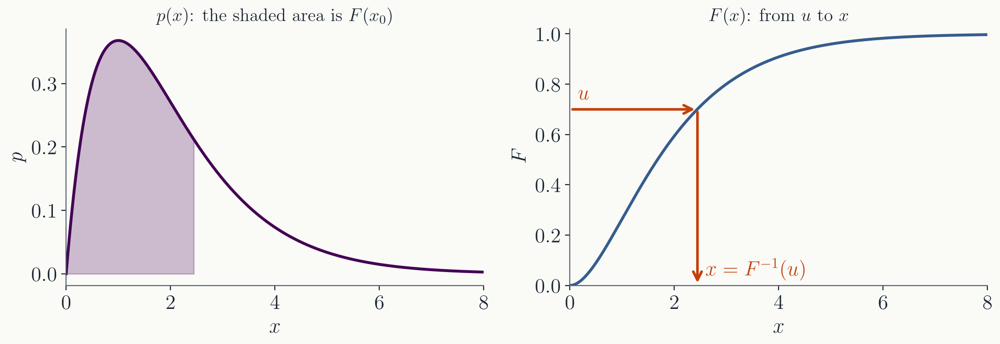
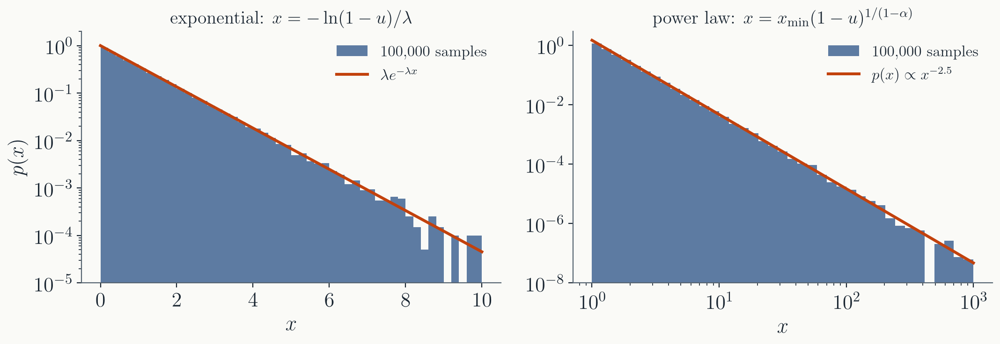
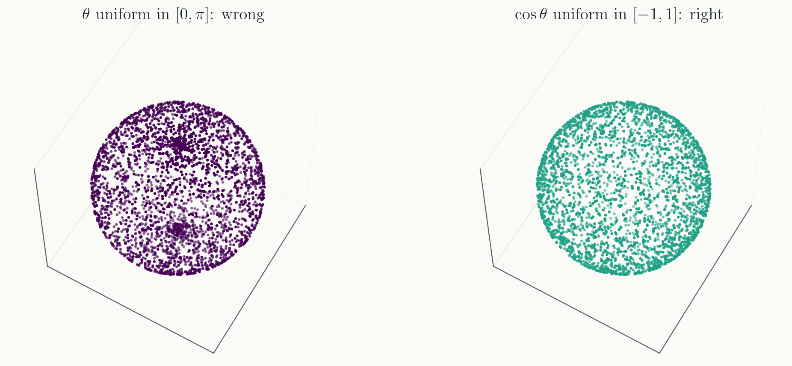
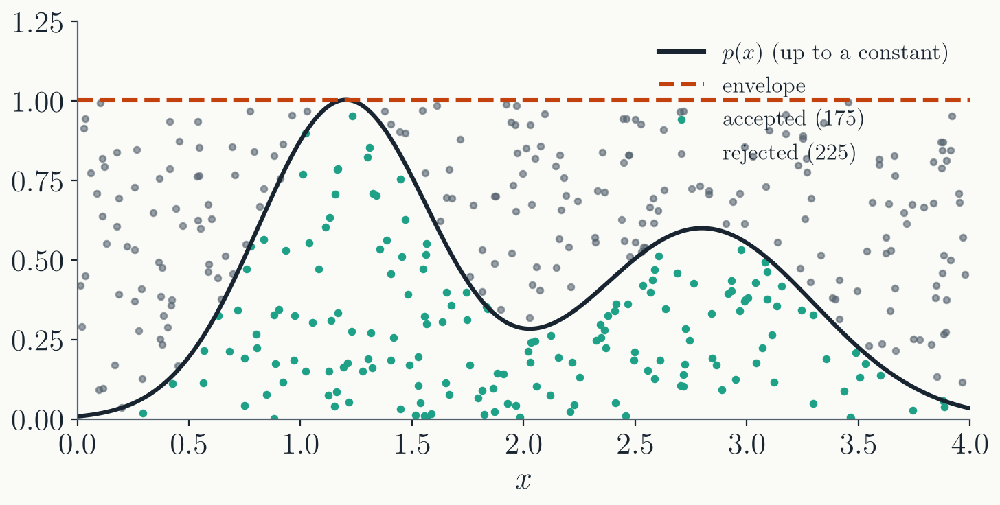

Conservative form and the finite-volume method: cell
averages, face fluxes, conservation to rounding.
The scheme of Project 2: Rusanov with the
local signal speed, a half step and a linear reconstruction,
the 2D CFL condition.
That closes the PDE block. The rest of the
course is stochastic: random numbers, Monte Carlo integration,
random walks, Markov chains.
Today: how a computer makes random numbers,
what can go wrong, and how to turn uniform numbers into any
distribution.
Part I · Pseudo-random numbers
Deterministic, and that is the point
Where physics needs them
Integrals in many dimensions: throw points, count hits.
Monte Carlo integration, next lecture.
Transport: a photon or neutron travels a
random distance, then scatters in a random direction.
Thermal motion: Brownian motion, Langevin
equations, noise in a circuit.
Statistical mechanics: sampling the
Boltzmann distribution of a system with $10^{23}$ states is
only possible by random walk. Markov chain Monte Carlo.
All of them start from the same thing: a
stream of numbers $u$ uniformly distributed in $[0, 1)$.
Pseudo-random
A computer is deterministic. Its "random" numbers come from a
recurrence: a state, a rule that advances it, and an
output read from it.
The seed is the starting state.
Same seed, same sequence, every time, on every machine.
The period is how many numbers
come out before the state repeats, and with it the whole
sequence.
The sequence is reproducible, and that is a
feature: a bug seen once can be seen again, and a result can
be checked by anyone with the seed.
The linear congruential generator
The oldest recipe (Lehmer, 1949): multiply, add, keep the
remainder,
$$
I_{n+1} = (a\,I_n + c) \bmod m, \qquad u_n = I_n / m .
$$
With $m = 16$, $a = 5$, $c = 1$, from $I_0 = 0$:
$$1,\ 6,\ 15,\ 12,\ 13,\ 2,\ 11,\ 8,\ 9,\ 14,\ 7,\ 4,\ 5,\ 10,\ 3,\ 0,\ 1,\ \dots$$
every value once, then it repeats: period $16$, the most $m = 16$
allows.
With $a = 4$ instead: $1,\ 5,\ 5,\ 5,\ \dots$
The constants are everything.
The one in your C library: $m = 2^{31}$,
$a = 1103515245$, $c = 12345$.
Pairs fall on lines

Plot $(u_n, u_{n+1})$ and every LCG shows a
lattice. With $m = 2^{31}$ the lines are too close to see in
two dimensions, but in $k$ dimensions there are at most about
$(k!\,m)^{1/k}$ of them.
RANDU
IBM's generator of the 1960s: $a = 65539$, $c = 0$, $m = 2^{31}$.
Every triple of consecutive numbers satisfies
$9u_n - 6u_{n+1} + u_{n+2} = $ an integer. All of them lie on
15 planes.

What "good" means
Period far longer than any run will use: $2^{64}$ at
least.
Uniform in one dimension, and no structure
in $k$ dimensions: no planes, no correlation between $u_n$
and $u_{n+j}$.
Fast, with a small state, and able to
produce independent streams for parallel runs.
These are tested, not proven: batteries of
statistical tests, Diehard (Marsaglia, 1996) and TestU01's
BigCrush (2007), 160 tests on $2^{38}$ numbers. "Passes
BigCrush" is the bar.
The generators in use
generator
year
where
state
period
BigCrush
LCG, rand()
1949
C library
32 bits
$2^{31}$
fails
Mersenne Twister
1997
C++ std::mt19937, Python random
2.5 kB
$2^{19937} - 1$
fails 2 tests
PCG64
2014
numpy default_rng
128 bits
$2^{128}$
passes
xoshiro256++
2019
Julia, .NET, Rust
256 bits
$2^{256} - 1$
passes
Mersenne Twister is the default in most
languages and still fine for physics; its state is large and
seeding it takes care.
PCG is an LCG with a 64-bit multiplier
whose output is scrambled by shifts and rotations; the
lattice is still there in the state, not in what you see.
xoshiro is ten lines of shifts and XORs.
The next slide shows its ancestor.
A generator in four lines
xorshift (Marsaglia, 2003), the ancestor of xoshiro:
uint32_t xorshift32(uint32_t x) {
x ^= x << 13;
x ^= x >> 17;
x ^= x << 5;
return x; // the new state, and the output
}
Each line is a linear map on the 32 bits.
The three shifts are chosen so that the state visits all
$2^{32} - 1$ nonzero values before repeating.
Fast: three shifts and three XORs, no
multiplication, no division.
xoshiro256++ keeps four 64-bit words and
adds a scrambler to the output; that is the whole difference,
and it passes BigCrush.
In practice
#include <random>
std::mt19937_64 gen(20261110); // seeded once
std::uniform_real_distribution<double> uniform(0.0, 1.0);
double u = uniform(gen); // in [0, 1)
In numpy: rng = np.random.default_rng(20261110),
then rng.random().
Never rand(), and never
rand() % 6 for a die: the low bits of an LCG are
the worst ones.
Seed once, at the start, and print the seed
into the output. A second run with another seed is the
cheapest check of a stochastic result.
Parallel runs: one generator per thread,
each with its own seed or its own jump of the stream, never
one shared generator.
Part II · Sampling from a distribution
From $u$ to anything
Density and cumulative distribution
A random variable $x$ with density $p(x)$: the probability of
finding it in $[x, x + dx]$ is $p(x)\,dx$. Its cumulative
distribution is
$$
F(x) = \int_{-\infty}^{x} p(x')\,dx' = \text{probability that the variable is below } x,
$$
rising from $0$ to $1$, never decreasing.

The inverse transform
Draw $u$ uniform in $[0, 1)$ and set
$$
x = F^{-1}(u) .
$$
Then $x$ has density $p$: the probability that
$x \le X$ is the probability that $u \le F(X)$, which is $F(X)$,
since $u$ is uniform.
Integrate $p$ to get $F$, invert, plug in
$u$. One uniform number per sample, no waste.
It needs $F^{-1}$: in closed form, or as a
table to search.
Exponential and power law
Exponential, $p = \lambda e^{-\lambda x}$: $F = 1 - e^{-\lambda x}$,
so $x = -\ln(1 - u)/\lambda$. Decay times, waiting times, the
free path of a photon with mean free path $1/\lambda$.
Power law, $p \propto x^{-\alpha}$ for
$x \ge x_\mathrm{min}$: $F = 1 - (x/x_\mathrm{min})^{1 - \alpha}$,
so $x = x_\mathrm{min}(1 - u)^{1/(1 - \alpha)}$. Cosmic-ray
energies, earthquake sizes.

The Gaussian: Box-Muller
$F$ is the error function, with no closed-form inverse. Take two
uniforms and make two Gaussians at once:
Libraries have it: std::normal_distribution,
rng.normal(). Thermal velocities are three of these
with $\sigma = \sqrt{k T/m}$.
A direction on the sphere
An isotropic direction, for a scattered photon or a thermal
velocity: $\phi = 2\pi u_1$, and
$$
\cos\theta = 2u_2 - 1 .
$$
Drawing the angle itself, $\theta = \pi u_2$, is wrong: it piles
the points up at the poles.

Discrete choices
Outcomes $1, \dots, K$ with probabilities $p_k$: which decay
channel, which reaction, which neighbour to hop to.
Form the running sums $F_k = p_1 + \dots + p_k$,
with $F_K = 1$.
Draw $u$; the outcome is the first $k$ with
$F_k > u$. The inverse transform on a staircase.
For large $K$, search the sorted $F_k$ by
bisection, $\log_2 K$ comparisons.
A table of $F$ at $x_0, x_1, \dots$ does the
same for a continuous $p$ that cannot be integrated by hand:
bisect, then interpolate.
Rejection sampling
When $F$ cannot be inverted: find an envelope $g(x) \ge p(x)$
that you can sample from, the simplest being a box.
Draw $x$ from $g$ (for a box: $x$ uniform),
and $y$ uniform in $[0, g(x))$.
If $y < p(x)$, keep $x$; otherwise throw it
away and try again.

The price of rejection
Every try that lands above $p$ is thrown away. The fraction
kept is
$$
\frac{\text{area under } p}{\text{area under } g} .
$$
A sharp peak under a flat box: almost
every try is wasted.
In $d$ dimensions the waste multiplies. A
peak that fills half the box in each direction fills
$(1/2)^d$ of the whole box: at $d = 10$, one try in a thousand
survives.
Which method
you have
use
examples
$F^{-1}$ in closed form
inverse transform
exponential, power law, $\cos\theta$, Cauchy
a finite list of outcomes, or $F$ as a table
inverse transform with a search
decay channels, tabulated spectra
a trick in other coordinates
a transformation
Box-Muller for the Gaussian
$p$ up to a constant, and a bound, in few dimensions
rejection
any bumpy $p(x)$
$p$ up to a constant, in many dimensions
Markov chain Monte Carlo
Boltzmann weights, posteriors
Whatever the method, check it the same way: histogram
$10^5$ samples against $p$ on a log axis, as in every figure
today.
Summary
A generator is a recurrence on a state: seed, period,
reproducibility. LCGs put their numbers on planes; modern
generators pass BigCrush with a few hundred bits of state.
Seed once, record it, one stream per
thread, never rand().
Inverse transform: $x = F^{-1}(u)$. Rejection:
propose under an envelope, keep what falls under $p$. Both
need only uniform numbers.
Next time: Monte Carlo integration, why its
error falls as $1/\sqrt{N}$ whatever the dimension, and
importance sampling.